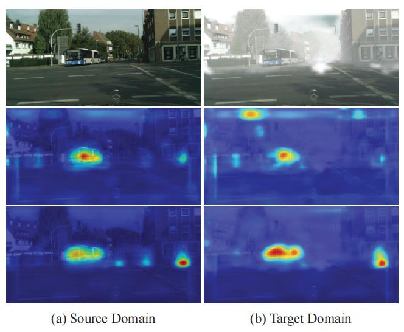
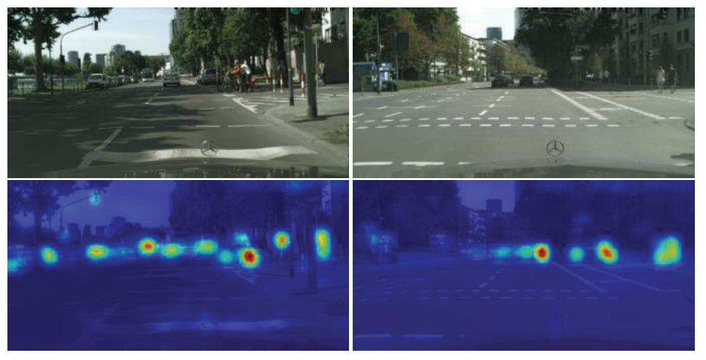
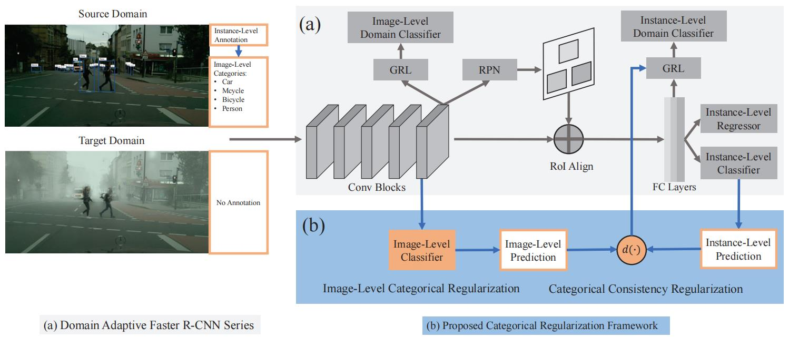
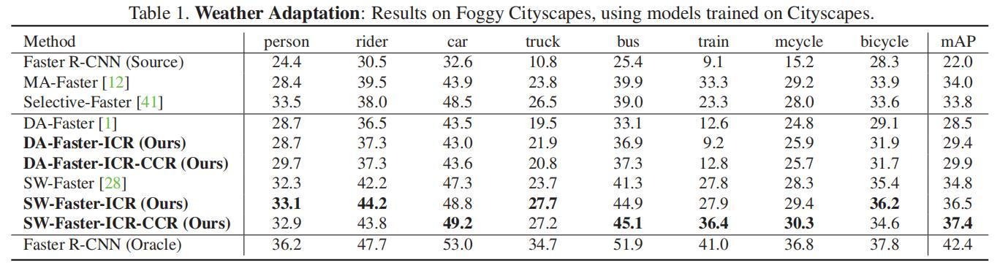

域适应目标检测：ICR-CCR¶
综述¶
会议与时间：IEEE Conference on Computer Vision and Pattern Recognition 2020 (CVPR, 2020)
源码地址：https://github.com/Megvii-Nanjing/CR-DA-DET
针对领域：域适应目标检测
主要思想¶
目前解决领域偏移问题最有效的方法是利用领域分类器来测量两个领域的差异，并且以对抗的方式训练领域分类器和特征提取器，通过微调特征提取网络的特征表示来让模型具有领域适应能力。在域适应目标检测算法中，Domain Adaptive (DA) Faster R-CNN系列的算法是最具有代表性的算法，如DA Faster R-CNN、SW Faster R-CNN等等，通过同时利用对抗损失来对齐图像级和实例级的跨域特征分布，来解决目标检测中的领域偏移问题。虽然最近的方法效果都比较显著，但是他们都忽略了跨域匹配图像的关键区域和重要实例，影响了模型的领域适应能力。
针对此问题，作者提出了一种分类正则化框架(categorical regularization framework)，他可以以一种即插即用的方式嵌入到目前大多数域适应目标检测算法中，通过精准地定位图像的关键区域和重要实例，来准确地提升主干网络对感兴趣对象的激活能力，从而让网络得到更好的自适应检测结果，如下图所示：

其中，第一行表示输入图像，第二行表示DA Faster R-CNN算法得到的主干网络的热图，第三行表示在DA Faster R-CNN算法的基础上，引入作者设计的正则化器所得到的主干网络热图。从可视化热图中可以发现，作者设计的框架可以使模型以更准确地方式来发现图像中的关键区域和重要实例，从而提升模型在这些区域的适应能力。
作者设计的框架主要由两个正则化模块构成：①图像级分类正则化(image-level categorical regularization, ICR)；②分类一致性正则化(categorical consistency regularization, CCR)。对于图像级分类正则化，首先在主干网络中加入图像水平的多标签分类器，并且利用来自源域的对象标签类别训练他，由于分类网络具有一定的弱定位能力(如下图所示)，因此通过训练该分类器可以使网络从整体图像中学习对象级概念，同时不受源域背景分布的影响，从而可以让网络在图像级别隐式地对齐两个领域之间的关键区域。对于分类一致性正则化器，作者考虑附加分类器图像级预测和检测器实例级预测之间的一致性，采用这种分类一致性作为一种新的正则化因子，并且在实例级对齐的过程中使用它来对目标域的实例对抗损失进行加权，从而使网络更加侧重对齐重要对象的特征。

方法¶
网络框架¶
作者提出的框架通过将两个正则化模块嵌入到DA Faster R-CNN中，来进一步提升该系列算法的领域自适应能力，具体的网络结构如下图所示：

该框架可以很好地跨领域协调关键区域和重要实例，从而在主干网络中对感兴趣的对象上产生更高的激活。注意：ICR模块不依赖于CCR模块，因此他可以嵌入到单独对图像级领域对齐的域适应算法中；但是CCR模块依赖于ICR模块，因为CCR模块需要来自ICR模块的多标签分类器来对目标域的图像做预测，具体可见下面对该模块的描述。
图像级分类正则化¶
利用图像级分类正则化器(ICR)可以得到对应于分类信息稀疏但是重要的图像区域，作者使用弱监督学习来实现这一点，通过学习感兴趣对象的区别特征(discriminative feature)来让网络忽略掉背景分布的影响。虽然标准的Faster R-CNN算法同样可以学到感兴趣对象的区别特征，但是在该算法的训练过程中，会在采样大量的背景区域，对比作者提出的ICR模块，标准的检测算法更倾向于训练背景区域，但是由于背景具有不可转移的模式，对背景执行领域对齐的话可能会产生一些负面效果，因此简单地图像级对齐可能会导致激活目标域中的噪声。
在作者提出的ICR模块中，首先将图像级多标签分类器嵌入到检测器的主干网络中(具体可见网络结构图)，之后利用源域图像的对象类别标签来训练该分类器。
给定检测器的主干网络，首先在输出的特征上执行全局平均池化，之后将得到的特征向量传入多标签分类器中，该分类器由卷积核尺寸为1\times1的卷积层构成，最后利用标准的交叉熵多标签损失来训练该模块：
图像级分类器的训练鼓励检测器的主干网络学习能够激活对象相关区域的特定类别特征，因此可以使网络以更准确的方式来对齐图像级特征，从而校准两个领域关键区域的特征描述。同时，由于在图像级多标签分类器的训练过程中不涉及训练背景(与传统Faster R-CNN的区别之处)，因此降低了匹配(甚至过渡匹配)源域背景的风险。
分类一致性正则化¶
作者还设计了分类一致性正则化器来自动寻找目标域数据中难以对齐的实例，动机主要有两个方面：①由于网络不能自动识别目标域中部分难以检测的前景实例，因此当前的实例级对齐模块可能会被过多的背景区域所支配，对模型的自适应过程具有负面影响；②附加的图像级分类器和实例级检测头是互补的，因为前者利用整个图像级上下文预测图像中的物体类别，后者利用准确的ROI特征来预测物体类别。
基于上面两个考虑，作者利用图像级预测和实例级预测之间的分类一致性来衡量某个目标实例进行分类的难度，直观地来说，如果图像级分类器在目标图像中没有预测到”人”，而实例级分类器预测到了”人”，则该实例对于当前模型来说是比较难以检测的实例，同时含有较为丰富的样本信息。因此在实例级特征对齐的过程中，应该使用这种一致性作为正则化因子来提升该样本的权重。
假设检测头的分类器对目标域图像中第j个实例分为c，让\hat{p}^c_j表示分类器估计的概率，同时假设\hat{y}^c表示图像级分类器对该图像包含c类物体的预测概率。利用如下距离公式来计算实例级和图像级分类预测的一致性：
上述得到的距离用于对实例级对齐损失加权，最终带有CCR正在化的实例级损失可以表示为：
与算法的结合¶
本文中，作者将Domain Adaptive Faster R-CNN(DA-Faster)算法与Strong-Weak aligned Faster R-CNN(SW-Faster)算法作为基线模型做研究
与DA-Faster的结合
将该正则化器与DA-Faster结合非常简单，只需要在网络中额外附加一个多标签分类器，即添加一个全局平均池化层和一个1\times1的卷积层，并且使用CCR模块来对实例级对齐的损失做加权，最终损失可以表示为：
与SW-Faster的结合
SW-Faster主要在DA-Faster的基础上使用弱全局对齐来提升模型在图像级自适应的能力，并且使用强局部对齐来代替原来的实例对齐模块。因为作者设计的分类正则化框架用于提升特定对齐算法的性能，ICR模块可以直接地结合到SW-Faster中，但是由于算法缺少实例级对齐模块，CCR模块不能直接与该算法结合，因此作者在此基础上添加了实例级对齐模块。最后的总损失可以表示为：
mAP对比¶
Cityscape \rightarrow FoggyCityscape

总结¶
本文提出了一个基于DA Faster的分类正则化框架，以提高检测模型的自适应能力。具体的来说，作者利用了多标签分类网络的弱定位能力和图像级预测与实例级预测之间的一致性，通过让网络聚焦于对齐物体相关的局部区域特征和难对齐的实例特征来进一步提升模型的领域自适应能力。
注：以上仅是笔者的个人见解，若有错误，欢迎大家批评指正
最后一次修改日期：2022年2月9日